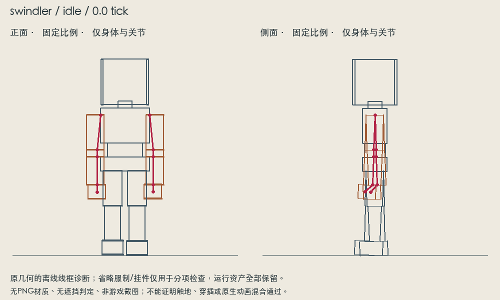
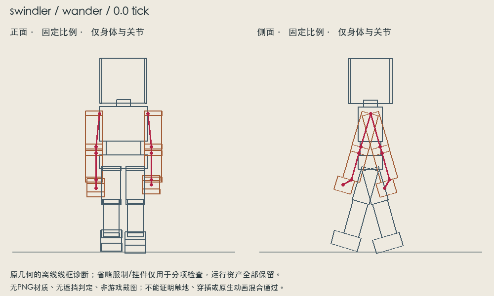
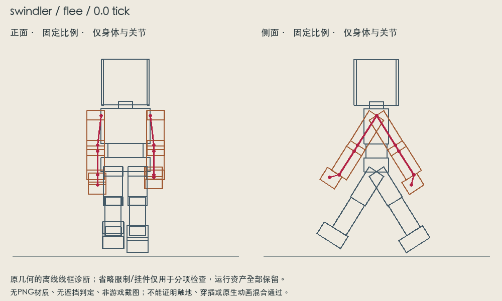
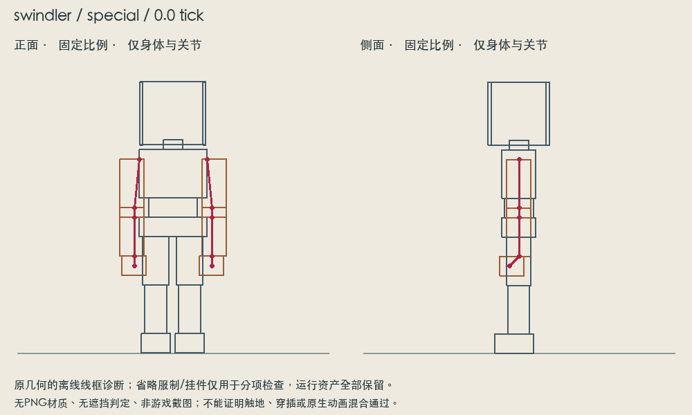
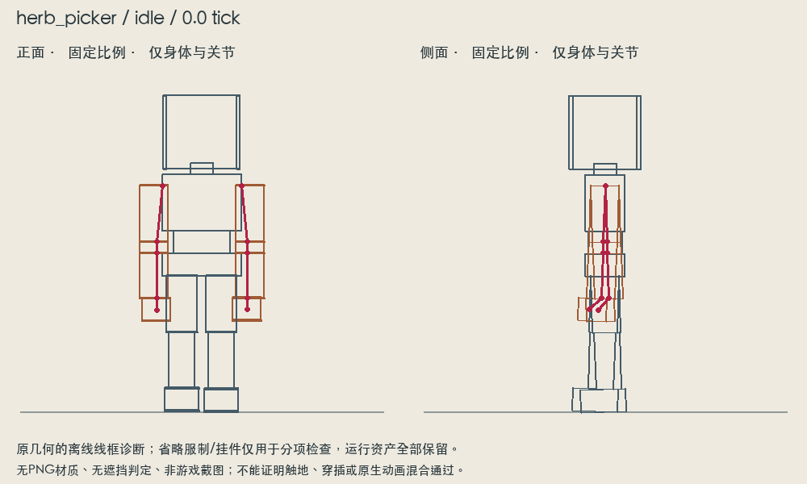
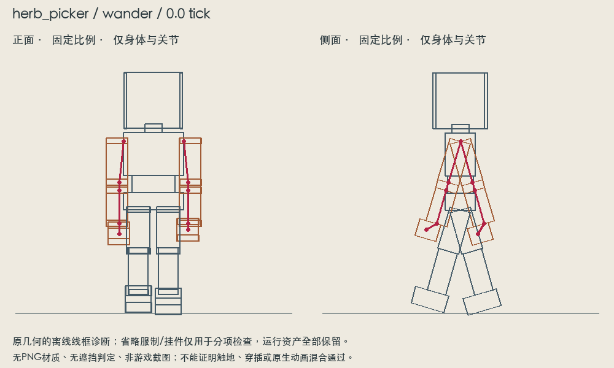
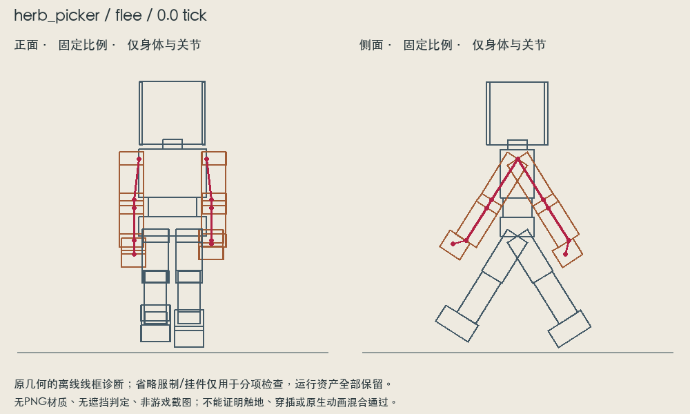
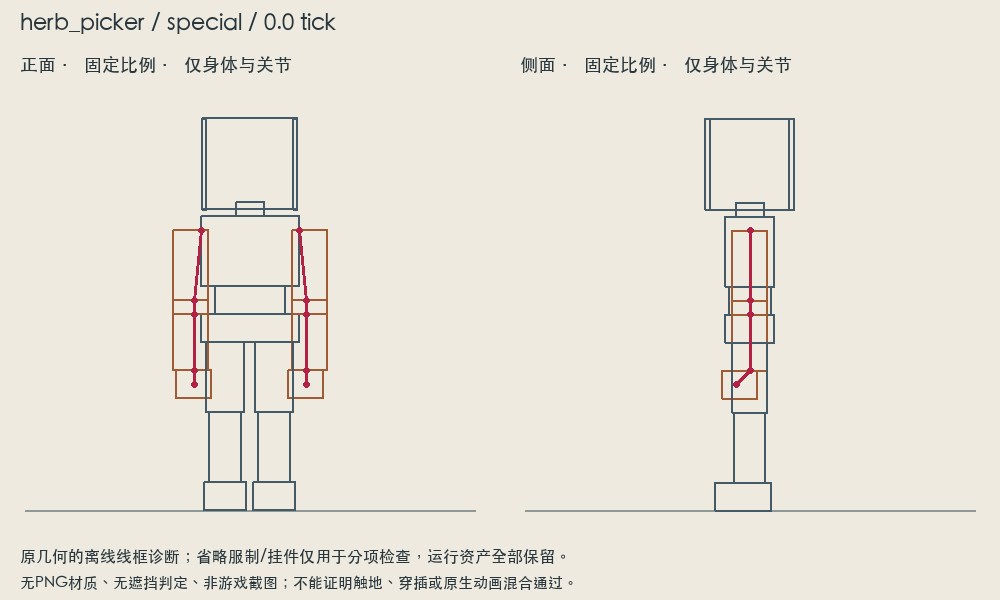

身体预算与动态关节：本批可复核结果
只读现有资源，未修改任何身体、动作、贴图、挂件或Java。没有启动游戏；以下均为离线诊断，不是新模型成品，也不是实机验收。
这批新增的是按职责分项计数、对照双方挂件口径、38段动作的2,322次姿态采样，不把旧192/180面计数再包装成新修复。所有原嵌入物仍在运行资源内，拆分只是账目分类。
两个现有角色：面数分区
| ID | 解剖身体 | 服制/头饰 | 背负物 | 手持物 | 身体+服制 | 完整模型 |
|---|
| swindler | 114 | 42 | 0 | 36 | 156 | 192 |
| herb_picker | 114 | 24 | 24 | 18 | 138 | 180 |
每只解剖身体19个Cuboid，共114个声明四边面；腕、膝等空骨骼不增加几何面。是否把头饰列入附件不会改变完整模型总预算。
基础怪必须使用相同口径
| 候选 | 完整模型 | 内嵌手持 | 背负配件 | 身体+服制 |
|---|
| zuwu_daoshou | 156 | 60 | 0 | 96 |
| juma_changqiangbing | 150 | 12 | 0 | 138 |
| liannu_zhenzu | 114 | 0 | 24 | 90 |
| fufa_jijiu | 108 | 6 | 6 | 96 |
| tiesuo_chihou | 144 | 54 | 12 | 78 |
| kuijun_sishi | 126 | 48 | 6 | 72 |
卒伍刀手156面里有60面内嵌武器，扣去后的同口径是96面；不能把骗子156面身体服制与刀手156面完整模型对比后宣布达标。采药客138面与长枪兵同口径相等，也不等于它获得了唯一、同职业的预算基准。原要求还包含同屏20只性能实测，仍未验。
关节与动作判断
- 两只未发现重名骨骼、缺父骨、父子环或38段动作引用缺失骨骼。检查涵盖每段动作起止与中间采样，不是只看0 tick。
- 肩部有直接轨道，右肘在attack/special中动作；前臂、腕、手跟随父级。没有独立手腕轨道不能推断为手不动。
- 共享表面点的变换差最大约3.6×10⁻¹⁵模型单位；这只验证特定接缝点的变换连续性，不能证明整块表面无穿插。
- 逃跑数学样本中脚底最低约-0.356、最高约+0.694模型单位（名义约-0.022／+0.043格）。需实际根变换、地面与原生播放复核，不能直接定性为游戏穿地或悬浮。
- 骗子special使用抬臂/伸臂的模板动作，源码在未识破时持续选择special；是否读成“假装受伤”尚待身份动作验收。未擅自修改状态或动作时间。
- 身体现在是分段19块构造，不是标准Steve六主体块；这是与后续人形方向的差异，不是本轮授权重做已认可资产。
swindler：现有身体与关节
待机 · 完整离线线框回放

同尺度四阶段展开图
行走 · 完整离线线框回放

同尺度四阶段展开图
逃跑 · 完整离线线框回放

同尺度四阶段展开图
现有特殊动作 · 完整离线线框回放

同尺度四阶段展开图
herb_picker：现有身体与关节
待机 · 完整离线线框回放

同尺度四阶段展开图
行走 · 完整离线线框回放

同尺度四阶段展开图
逃跑 · 完整离线线框回放

同尺度四阶段展开图
现有特殊动作 · 完整离线线框回放

同尺度四阶段展开图
实际补读的制作方法
两份既有缓存模型源码完整补读，只作为关节／姿态实现上下文。未查看本轮对应原始图集，不计新“模型+贴图”参考；既有家族不按动作状态重复计数，新增1000门槛信用为0。
- Polarice3/Goety-2 · 02adbe749176:
- Arms remain single 4x12x4 cubes under body; compound root/body transforms are applied by translateToHand.
- Attack/spell/bow/crossbow states choose distinct arm poses instead of adding elbow/hand geometry for every pose.
- resetPose precedes pose assignment. Geometry includes crossed-arm alternative; raw declared cubes are not the visible per-frame set.
- Infamous-Misadventures/Dungeons-Mobs · f04b11e7b367:
- Starts from HumanoidModel.createMesh, retains single-cube arms/legs and layers a jacket over body.
- prepareMobModel maps MAIN/OFF_HAND through getMainArm before selecting BLOCK/BOW/CROSSBOW poses.
- setupAnim hides crossed-arm alternative or separate arms; jacket is hidden when chest/leg equipment occupies it. Runtime visibility is not mesh-budget deletion.
具体资源与未验范围
读取的两只实体资源为 geo/secondary/{swindler,herb_picker}.geo.json 与对应 animations/secondary/*.animation.json；仍由 ExpansionClient Geo 渲染链加载，未切换到 SteveFighterRenderer。具体22个输入路径与SHA256见收据。
尚未验证：GeckoLib控制器混合、原生插值/根变换、实际遮挡/穿插/触地、完整持物、替换挂件、同屏20只性能和游戏身份动作效果。适用1000条语义不同参考未达，不新增修复、不删清单。
完整收据及输入哈希 · 逐姿态样本 · 固定来源和观察 · 本地证据完整性检查 · 复核脚本